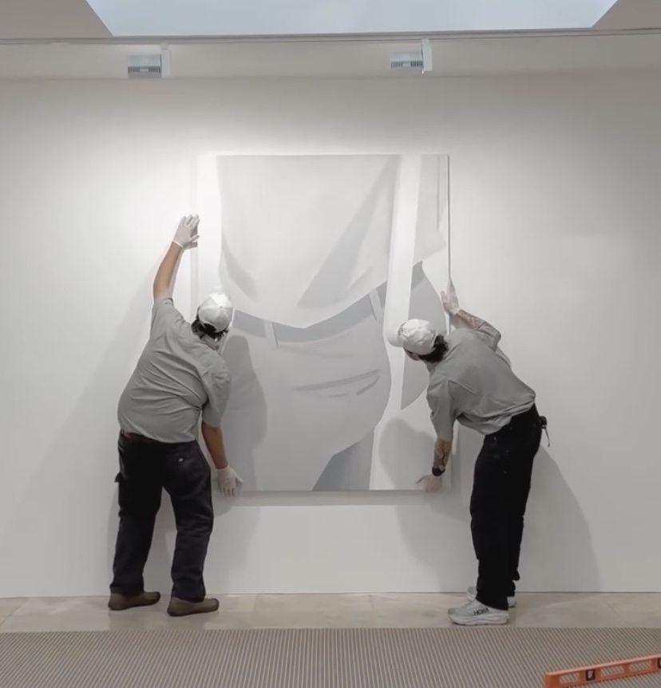
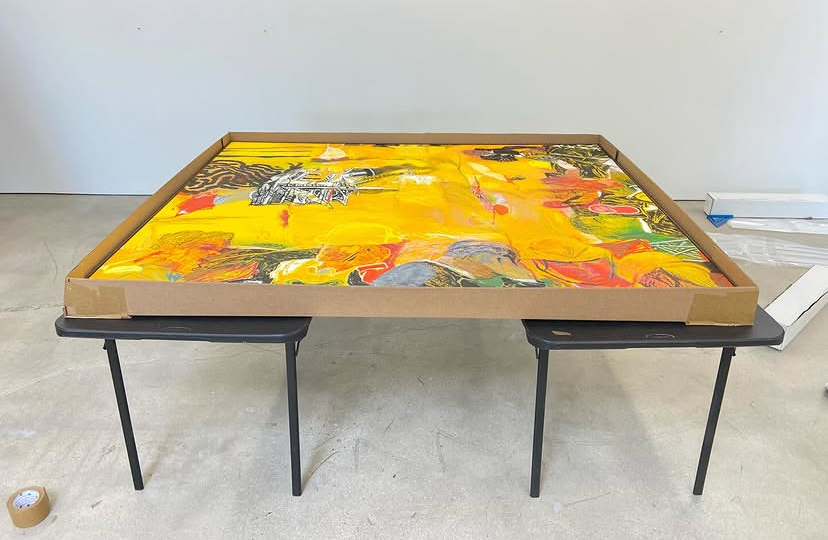
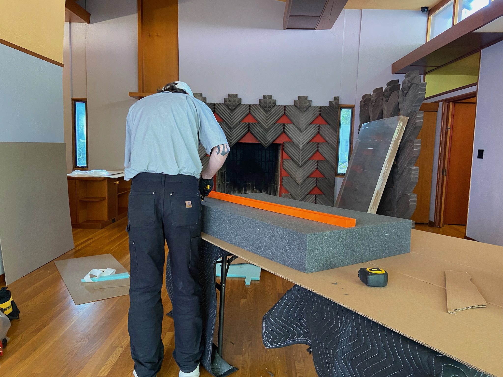
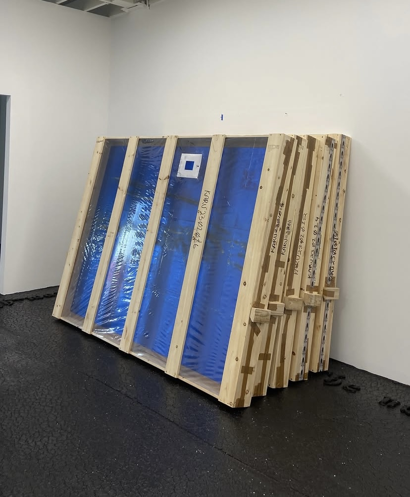
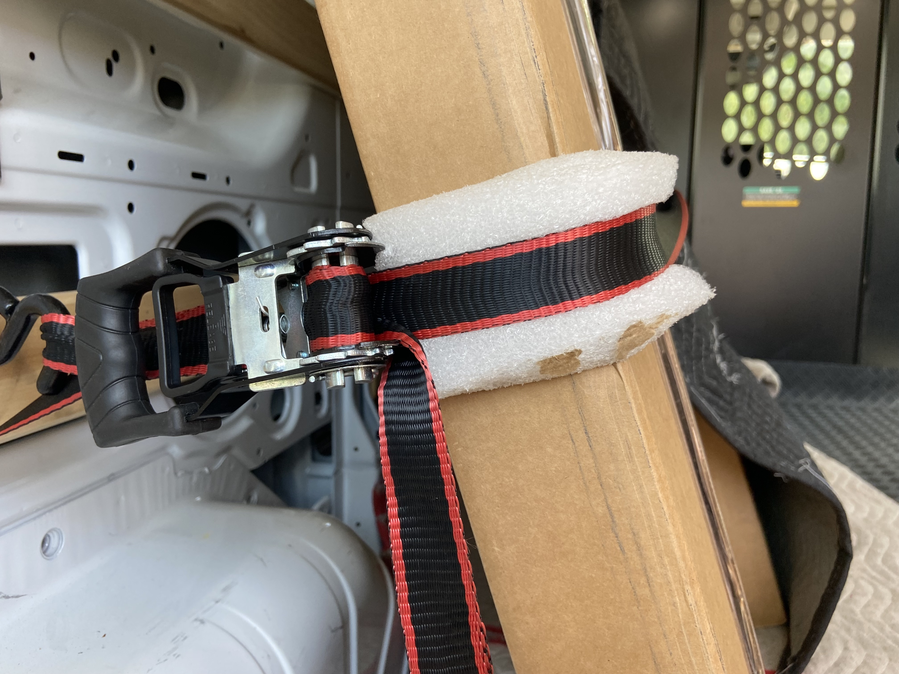
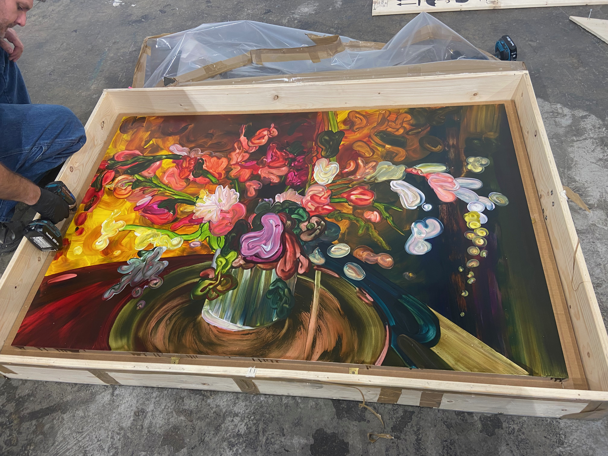

We work closely with artists, collectors, galleries, and institutions to thoughtfully place and install artwork, adapting as-needed throughout the process. Whether hanging a single piece or installing an entire exhibition, we carefully place, level, and secure artworks to ensure a professional presentation.

Ensuring that artworks are safe in their transition between exhibitions and installations, we provide careful and efficient deinstallation services for projects of all sizes. Our mobile setup allows us to efficiently pack your artworks and prepare them for their next phase.

Using museum-standards, we carefully soft-pack artworks for transportation, short-term storage, or long-term collection care, ensuring they remain secure every step of the way.

Custom-built crates and travel solutions designed for local, national, and international shipment of fine art and antiques. Request an estimate through our website.

Local and regional Southern California art transportation with service to San Francisco, Santa Barbara, Coachella Valley, Palm Springs, Joshua Tree, Orange County & San Diego. Our team will transport your artworks with condition reporting upon departure & arrival.

We provide detailed documentation of all artworks before and after transport, installation, packing or storage for your records and to ensure that every artwork is handled with care throughout each stage of a project.